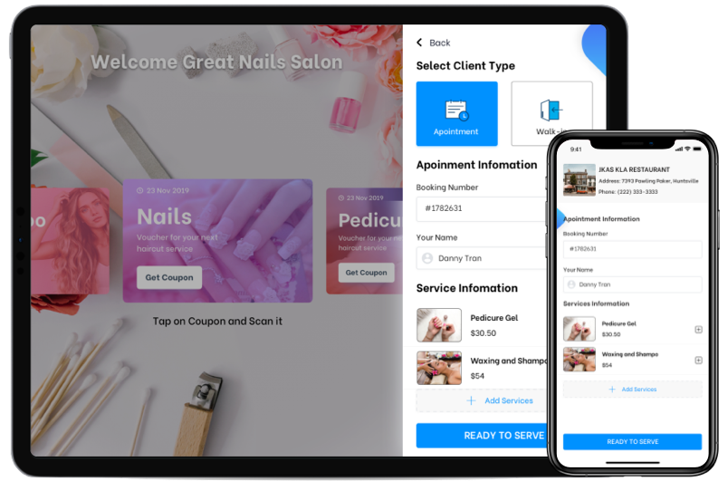
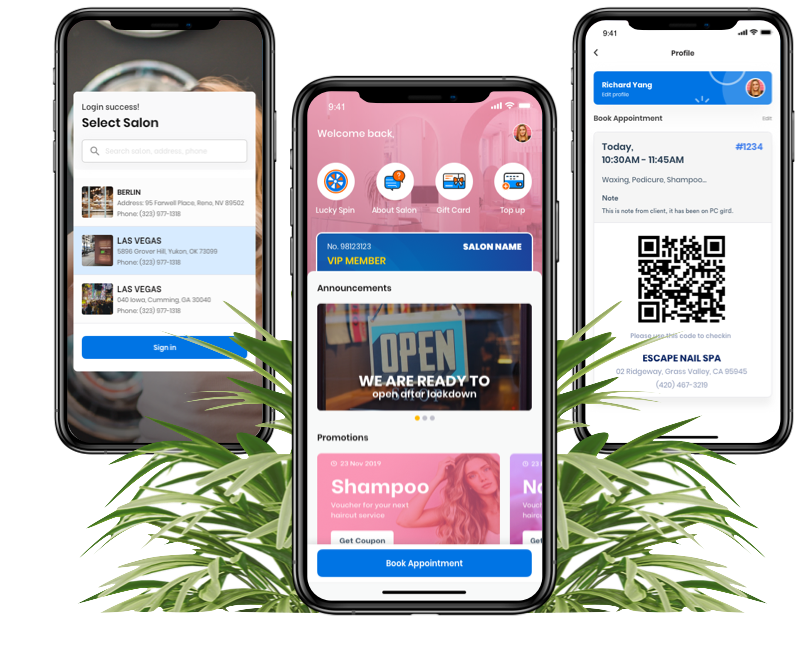
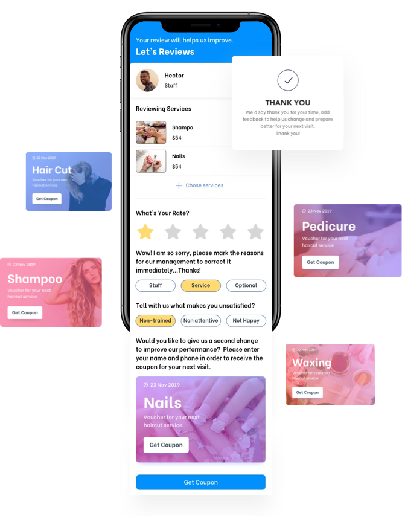
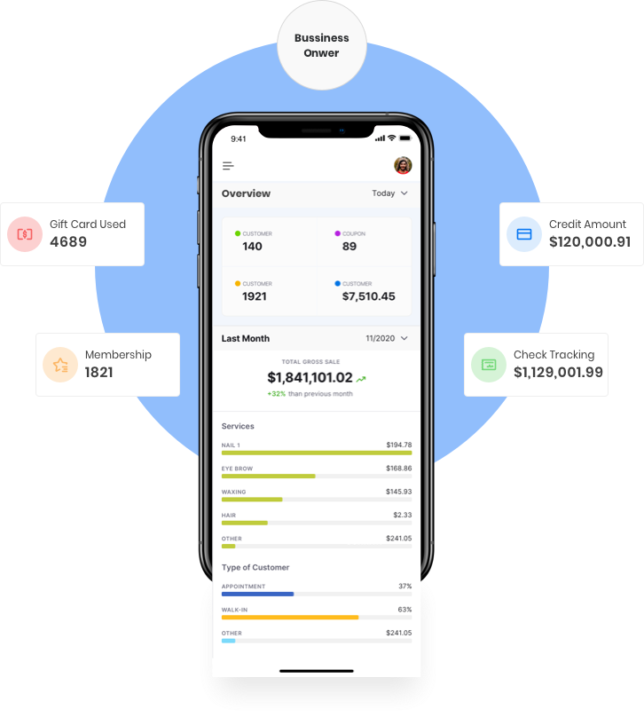

In short
iSystem wanted 20% of a 54,000-salon market and had fifty salons on the platform client-reported, while asking one design team to build eight apps at once for three user types with opposed needs.
I sequenced the eight apps around a single transaction spine, book to check-in to pay, and pushed the owner-facing remarketing suite behind it. Remarketing was the client's stated priority.
The team stopped building eight products in parallel and started building one. The sequence was accepted and specced. The company folded before the later phases shipped, so no launch metric is mine to claim.
Discovery
A nail salon looks like one business and behaves like three. A customer books, arrives, pays and leaves. A technician works a queue and a tip split. An owner wants to know who earns, which promotion converts, and who has not returned in sixty days. iSystem's answer was eight applications, all scheduled to be built by one design team at once.

User insight
Three user types whose interests actively conflict. The customer wants to book in under a minute. The technician wants an accurate queue and a correct tip split. The owner wants data, and every feature serving that appetite adds a step for whoever is holding the tablet.
Data insight
7,730 customers, 350 staff, 50 owners client-reported: a 155 : 7 : 1 ratio. But four of the eight apps were for the owners and their staff. 95% of users were scheduled to get half the product.
Business insight
Roughly half of the 54,000 US nail salons are Vietnamese-owned, over 80% in California public. That is why a Vietnam-based team was selling US salon software: buyer and builder shared a language and a community.
Check-in is where the user conflict is sharpest. The owner wants identity and marketing consent. The walk-in wants a number and a chair. Whichever way that screen resolves, someone loses, and the whole ecosystem argument runs through it.
The market was real. The 20% ambition was not. Fifty salons against 54,000 is 0.09% penetration, roughly 220 times short of the stated goal, and both numbers were already on the client's own deck one slide apart. At that gap, the binding constraint is not feature coverage. It is whether the first fifty salons can run a whole working day on the system without falling back to paper.
The brief itself named three criteria: consistent (apps and brands easily distinguishable), friendly (easy to move between apps), and attractive (increase demand). Those are aesthetic tests for what turned out to be an operational problem, and the next section is the record of overriding them.
The decision: what ships last
Eight apps across three user types is not a backlog you can rank. Sliced by user type, you ship a consumer app that books appointments no salon can receive. Sliced by who signs the cheque, you ship an owner dashboard with nothing to report. The only question worth answering was which sequence leaves a working salon at the end of every phase.
Options on the table
A — Owner-first. CRM, analytics and remarketing. What the
client asked for, and it ships an empty dashboard.
B — Customer-first. The four consumer apps. Buys adoption;
bookings arrive with nowhere to land.
C — Transaction spine. Booking to check-in to payment as one
flow, then loyalty, then owner tooling on the data it produces.
Criteria I judged on
Does a salon get through a whole working day on it? Does it generate the data the later apps depend on? Can we validate it with the fifty salons we already had, rather than the fifty thousand we did not?
What I chose
Option C, the only sequence where each phase makes the next possible. Check-in has no meaning without a booking, the POS has nothing to total without a check-in, and every owner report is a query over transactions that don't exist until the first three ship.
What I killed
The remarketing suite, the lucky-spin referral mechanic and gift cards, all pushed behind the spine despite remarketing being the client's stated priority. A retention tool is worthless with no transaction history to retain against.
I treated the eight apps as one product with three front doors rather than eight products sharing a logo. Spending the first build cycle on acquisition mechanics for fifty salons was optimising the wrong end of the funnel.
Confirm this narrative before it ships. The options, criteria and kill list are reconstructed from the artifacts: the spine is the only sequence the eight apps support, and remarketing is visibly the client's priority. You need to confirm you made this call, in these terms. An interviewer will probe this section hardest.
Solution design
The spine is one flow crossing three surfaces. The customer books in four steps and verifies by OTP. That booking lands on the staff waiting list at check-in, where reception assigns a technician. The check-in record totals into iPOS at payment. One record, three views: the customer sees a confirmation, the technician sees a queue position, the owner sees a line of revenue.



OTP at booking
An extra step on the flow with the highest drop-off risk, kept on purpose. Without a verified number, no-shows are uncontactable and the loyalty layer has no identity to attach to. I traded conversion for a customer record the later apps could build on.
One design system, eight apps
Each app alone would have been better with a bespoke pattern set. Shared components meant a technician moving between iCheckin and iPOS mid-shift never relearned anything, and one designer could hold eight surfaces.
That second point is also the truthful version of the client's "consistent" brief: not brand consistency, muscle-memory consistency.
The five apps behind the spine were specced and prototyped, then sequenced after it. They are the part of this project a portfolio wants to lead with, and the part a case study should not.




On the prototypes. Every flow here was built as an interactive InVision prototype. InVision shut its prototyping product down on 31 December 2024 and deleted the hosted files, so the seven "Play Prototype" links this page used to carry have returned blank ever since. They are removed rather than left to fail silently.
Name the validation method. Expert inspection, or moderated testing with real salon staff? The framework treats naming the method as what separates you from people who shipped on instinct. "Not validated, and here is why" is an acceptable answer.
Delivery
Unfilled. What changed between spec and handoff — scope cuts, technical constraints, anything the client rejected? Two or three sentences is enough, and this is where technical partnership becomes visible. If nothing was built beyond the prototypes, say so plainly and this section gets cut rather than padded.
Learning and follow-up
Not shipped as a full ecosystem. The company folded. The spine was specced, prototyped and handed off in Dec 2021; the later phases were never built. I set one target in discovery, a salon completing a full day without paper, and never got to measure it. No number on this page is a launch outcome, and I won't imply otherwise.
What I would have tracked, in order: the share of daily transactions originating in the app rather than on paper; walk-in check-in completion rate; and the ratio of repeat to first-time customers at sixty days. That last one is the only metric that would have justified the remarketing suite I deferred.
If you know when and why iSystem folded, one clause here makes the whole page more credible. "I don't know what happened after handoff" also works — say it rather than leave the reader wondering.
What I'd do differently
The eight-app scope was handed to me and I never challenged the number. I spent my leverage sequencing within it, when with fifty salons and that gap to the stated goal, the right recommendation was three apps and a waiting list. I sequenced well inside a scope I should have refused.
I also took "consistent, friendly, attractive" at face value for too long. Those are aesthetic criteria, and they framed the first weeks as a visual-consistency problem across eight apps when the real question was whether a salon could get through a Saturday. I reached the spine argument through design work rather than through the client's own retention numbers, which I never asked for.